Je me présente, je suis Enzo LAMANNA, étudiant en première année de BUT Réseaux &
Télécommunications à l'IUT d'Aubière (63).
Initialement attiré par la programmation pure et son aspect logique, mon manque de clarté
professionnelle m'a finalement mené vers une réorientation dans le domaine des réseaux.
C'est pourquoi j'ai choisi de poursuivre mes études en BUT Réseaux et Télécommunications
(R&T), non seulement pour me spécialiser en réseaux, mais aussi pour la polyvalence des
compétences offertes par cette formation.
Dans l'objectif de valider mon diplôme et apprendre dans un cadre concret grâce à un
environnement professionel, je suis à la recherche d'un stage de 10 semaine à compter
d'avril 2027 en réseau.
Sociable, curieux et rigoureux sont les trois adjectifs qui définissent parfaitement mon
attitude dans un contexte professionnel.
À propos
Formations
BUT - Réseaux & Télécommunications
2025 - Présent
BUT - Réseaux & Télécommunications
2025 - PrésentObjectif de la Formation
Le BUT Réseaux & Télécommunications (R&T) est un diplôme de niveau Bac+3 (Licence professionnelle), accessible après le Baccalauréat. Cette formation en trois ans vise à former des techniciens supérieurs spécialisés en réseaux informatiques, télécommunications et cybersécurité (à partir de la deuxième année BUT2).
Pourquoi l'IUT d'Aubière ?
Mon choix pour cette formation a été guidé par la
Journée Portes Ouvertes de l'IUT en Février 2023, durant laquelle j'ai
eu la chance d'échanger avec les enseignants et étudiants afin de clarifier mes doutes.
Ce qui m'a convaincu est l'approche polyvalente des cours, tous
orientés Réseaux. En plus de couvrir en profondeur les aspects techniques liés aux
Réseaux, la formation propose des modules essentiels tels que la
Communication et la Gestion de Projet, préparant ainsi
l'étudiant à toutes les exigences du métier de technicien réseaux.
Enfin, le BUT
R&T offre également la possibilité de réaliser des stages ou de
l'alternance (sur un rythme 1/1mois), ce qui est particulièrement
bénéfique pour acquérir une expérience professionnelle concrète et essentielle avant de
s'insérer sur le marché du travail.
Et maintenant ?
Après validation de ma première année de BUT Réseaux & Télécommunications en fin d'année universitaire 2026, je souhaite poursuivre mon cursus afin d'approfondir mes compétences et de débuter la spécialisation en cybersécurité dès la deuxième année.
Licence 1 - Mathématiques et Informatique
2024 - 2025
Licence 1 - Mathématiques et Informatique
2024 - 2025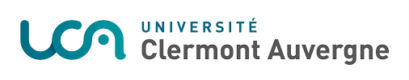
Objectif de la Formation
La Licence Mathématiques-Informatique offre, en trois ans, une double expertise. Elle développe la rigueur analytique grâce aux mathématiques et les fondations de l'algorithmique avec l'informatique, formant des profils aptes à modéliser et résoudre des problèmes complexes.
Pourquoi la Licence ?
Suite au refus de mon dossier pour le BUT R&T via Parcoursup en 2023, j'ai opté pour la Licence Mathématiques et Informatique. Ce choix m'a permis de rester aligné avec mon projet d'acquérir des compétences fondamentales en logique et en informatique.
Et maintenant ?
Bien que ma première année en Licence ne fût pas mon orientation de départ et qu'elle ne soit pas validé, cette expérience m'a permis de m'adapté aux exigences de la vie étudiante et de gagner en autonomie. J'ai également profité de cette période pour approfondir mes compétences techniques, notamment en découvrant l'environnement Linux et le langage Bash. Fort de ces acquis, j'ai renouvelé ma candidature pour le BUT R&T, un cursus en parfaite adéquation avec mon projet professionnel, et j'ai le plaisir d'y être admis pour la rentrée de septembre 2025.
Baccalauréat - Série Générale
2021 - 2024
Baccalauréat - Série Générale
2021 - 2024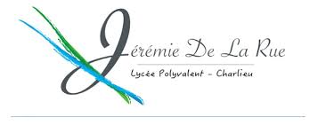
Objectif de la Formation
Le Baccalauréat général a pour objectif principal de se préparer aux études supérieures en offrant une culture générale approfondie. De plus, les spécialités Mathématiques et NSI permettent d'acquérir les fondations nécessaires pour s'orienter vers des filières scientifiques et technologiques.
Pourquoi le Lycée Jérémie de la Rue ?
J'ai choisi ce lycée car, en tant qu'établissement de mon secteur, il me permettait d'atteindre mon objectif de poursuite d'études supérieures tout en offrant les spécialités qui correspondaient parfaitement à mon projet : Mathématiques, NSI et Physique-Chimie en première, puis Mathématiques et NSI en terminale.
Et maintenant ?
L'obtention de mon baccalauréat m'a permis d'acquérir les bases solides nécessaires en Mathématiques et en Informatique pour m'engager dans mes études supérieures, notamment pour le BUT RT.
Certifications
Cisco CCNA
Obtention : En cours
Cisco CCNA
Obtention : En coursObjectif de la Certification
Cisco CCNA is une certification qui permet d'acquérir les compétences fondamentales pour l'installation, la configuration, l'exploitation et le dépannage des réseaux d'entreprise.
Pourquoi CCNA ?
Dans cette certification, j'apprends à maîtriser les fondements des réseaux en m'appuyant sur les modèles OSI et TCP/IP. L'objectif is de savoir configurer les paramètres de base des routeurs et commutateurs via Cisco IOS, tout en manipulant les systèmes de numération binaire et hexadécimal pour l'adressage. La formation permet de gérer les supports physiques, la commutation Ethernet, ainsi que la conception de plans d'adressage complexes par la segmentation de réseaux IPv4 et IPv6. La différenciation des protocoles TCP et UDP, la configuration de services comme le DNS ou le DHCP, et l'application des bases de la sécurité réseau font également partie des compétences acquises. Enfin, l'utilisation d'outils de diagnostic devient naturelle pour tester et dépanner la connectivité d'un réseau opérationnel.
Et maintenant ?
Une fois cette certification acquise, j'aurai appris les méthodes permettant de concevoir et d'implémenter une topologie réseau, en utilisant l'outil de simulation Cisco Packet Tracer, et serai capable de paramétrer la majorité des équipements Cisco.
SST - Sauveuteur Secouriste du Travail
Obtention : 2026
SST - Sauveuteur Secouriste du Travail
Obtention : 2026Objectif de la Certification
La certification SST (Sauveteur Secouriste du Travail) est une formation qui permet d'acquérir les compétences fondamentales pour intervenir efficacement face à une situation d'accident du travail et participer activement à la prévention des risques professionnels au sein de l'entreprise.
Pourquoi SST ?
Souhaitant apporter une réelle valeur ajoutée en entreprise, j'ai choisi de passer le SST pour compléter ma formation PSC1 et l'adapter au contexte professionnel. Je maîtrise désormais les gestes de secours indispensables pour protéger une personne en danger tout en développant discernement nécessaires pour gérer une situation critique. De plus, cela m'a permis d'assimiler le cadre juridique et mes responsabilités concernant l'exécution de ces gestes de premiers secours.
Et maintenant ?
Désormais certifié, je suis pleinement apte à intervenir avec méthode pour protéger toute personne en danger. Même face à des situations complexes ou difficiles, je m'engage à faire tout mon possible pour porter secours et appliquer les gestes nécessaires. Que ce soit dans ma vie quotidienne ou au sein de mon futur environnement professionnel, je dispose des outils techniques et réglementaires indispensables pour assurer la sécurité de mon entourage et agir en tant que membre actif de la prévention.
PSC1 - Formation premiers secours citoyen
Obtention : 2024
PSC1 - Formation premiers secours citoyen
Obtention : 2024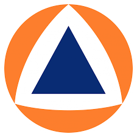
Objectif de la Certification
La certification PSC1 permet de préparer au mieux l'arrivée des secours en effectuant les premiers gestes de secourisme et les soins vitaux immédiats, optimisant ainsi les chances de survie de la victime. La validation de cette certification s'effectue au moyen d'exercices pratiques et de mises en situation simulant des urgences réelles comme les cas d'étouffement, de brûlures ou de perte de conscience.
Pourquoi la PSC1 ?
J'ai entrepris la démarche de faire cette certification afin de savoir secourir et protéger une personne en danger en appliquant les bons gestes. Cela m'assure de répondre avec calme et discernement aux situations de stress, sans paniquer dans un cadre personnel ou professionnel.
Et maintenant ?
Grâce à cette certification, je suis apte à intervenir et à mettre en œuvre les gestes nécessaires pour secourir et protéger une personne en situation de danger dans ma vie quotidienne.
Compétences
Compétences Techniques
Programmation
Technique
Programmation
TechniqueEnjeux techniques
Au quotidien, la programmation et le développement web me permettent de concevoir, de déployer et de concrétiser mes différents projets. De plus, dans le domaine de la cybersécurité, la maîtrise du code est une compétence cruciale pour automatiser les défenses, analyser les vulnérabilités et répondre efficacement aux besoins des infrastructures.
Python
Essentiel pour l'automatisation, Python est un langage dont je maîtrise aussi bien les bases — comme la manipulation des variables, des boucles et des fonctions — que des concepts plus avancés. Je sais notamment implémenter la récursion et appliquer les principes de la Programmation Orientée Objet (POO) à travers l'utilisation de méthodes dédiées.
C
Je maîtrise les bases et la structure du langage C, ce qui m'a permis de mieux assimiler la gestion de la mémoire et l'organisation des espaces de données, notamment à travers la manipulation des pointeurs et de l'allocation dynamique.
Web
En développement web, je maîtrise les technologies fondamentales : HTML pour la structure, CSS pour le design, et JavaScript pour le dynamisme. Ces compétences m'ont non seulement permis de concevoir et réaliser l'intégralité de ce portfolio, mais elles m'aident aussi à analyser l'architecture d'une application pour mieux en comprendre les vulnérabilités, qu'elles se situent côté front-end ou back-end.
Base de donnée
Je maîtrise le couple PHP / SQL pour le développement côté serveur. PHP me permet de gérer la logique interne de l'application (le traitement des requêtes utilisateurs), tandis que SQL assure l'interaction avec les bases de données. Cette compétence back-end est essentielle pour comprendre comment transitent les données et comment sécuriser un site contre des failles critiques comme les injections SQL.
Bash
Maîtrise de l'environnement Linux et de son terminal pour naviguer avec aisance au sein des arborescences de fichiers. Capacité à concevoir des scripts Bash simples afin d'automatiser des tâches répétitives et optimiser la gestion du système.
PowerShell
Utilisation de PowerShell sous Windows pour l'administration système, notamment la gestion des utilisateurs, l'administration des droits et la manipulation avancée du système de fichiers (fichiers et dossiers).
Réseaux
Technique
Réseaux
TechniqueEnjeux techniques
Se spécialiser dans les réseaux exige une compréhension globale de systèmes en évolution constante. Au-delà du simple routage des données, il s'agit de maîtriser l'architecture et la gestion des infrastructures pour garantir leur bon fonctionnement.
Configuration
Je maîtrise la configuration en ligne de commande (CLI) des équipements Cisco, notamment les routeurs, commutateurs et serveurs. Cela me permet de déployer et de paramétrer des infrastructures réseaux entièrement opérationnelles.
Test de connectivité
Je sais valider le bon fonctionnement d'un réseau en effectuant des tests de connectivité (Ping). J'utilise également le logiciel Wireshark pour effectuer de l'analyse de trames, ce qui me permet de vérifier la conformité des échanges et de diagnostiquer d'éventuelles anomalies.
Téléphonie d'entreprise
Je sais déployer et configurer un serveur IPBX pour mettre en place une solution de Téléphonie sur IP (ToIP) en entreprise. Je maîtrise l'intégration de différents terminaux, tels que les téléphones DECT ou les boîtiers ATA, ainsi que le paramétrage des fonctionnalités professionnelles comme les messageries vocales et les groupes d'appel.
Service
Capable de répondre aux besoins d'une infrastructure, j'assure la mise en place et le paramétrage de nombreux services clés : le DHCP (Dynamic Host Configuration Protocol) pour l'adressage dynamique, le DNS (Domain Name System) pour la résolution de noms, le FTP (File Transfer Protocol) pour le transfert de fichiers, ainsi que le déploiement de serveurs Web. De plus, je sais gérer un domaine via Active Directory (AD) sous Windows Server, notamment en configurant des stratégies de groupe (GPO).
Logiciel de simulation
Utilisation du logiciel de simulation Cisco Packet Tracer pour maquetter virtuellement des infrastructures réseaux physiques. Cet outil me permet de concevoir des architectures complexes et d'effectuer des tests rigoureux en mode temps réel ou en mode simulation afin de valider leur bon fonctionnement avant tout déploiement réel.
Plan d'adressage
Capacité à structurer un plan d'adressage logique et évolutif en fonction du cahier des charges, assurant la bonne connectivité de l'ensemble des équipements et facilitant la gestion du réseau.
Télécommunications
Technique
Télécommunications
TechniqueEnjeux techniques
Étudier les télécommunications, c'est s'intéresser à la couche physique des réseaux. Il ne s'agit pas seulement d'aiguiller les paquets de données, mais de comprendre comment ils sont convertis et transmis dans les câbles. Cela demande d'appréhender des concepts fondamentaux d'électricité, de gestion de la puissance et de traitement du signal pour assurer une transmission fiable et sans pertes.
Oscilloscope
L'oscilloscope me permet d'analyser et de réaliser des mesures précises sur les signaux. C'est un outil primordial qui me permet de visualiser concrètement leur comportement et leur évolution temporelle.
GBF
Le GBF (Générateur de Basses Fréquences) me permet de générer tout type de signaux (sinusoïdaux, carrés, triangulaires). Cela me permet d'injecter des signaux tests pour mener à bien mes différentes expérimentations.
Analyseur de spectre
L'analyseur de spectre me permet d'étudier les signaux dans le domaine fréquentiel. Il me permet notamment d'analyser la bande passante, de mesurer la puissance des fréquences et de repérer d'éventuelles interférences.
Fibre Optique
L'étude de la fibre optique me permet de comprendre comment les données du réseau transitent à travers la lumière. Elle me permet également de maîtriser les outils de test pour vérifier qu'il n'y a pas de coupure ou d'atténuation dans le câble en verre.
Schématisation et Analyse de Problèmes
Capacité à retranscrire un besoin technique sous forme de schéma fonctionnel afin de structurer la réflexion en amont. Cette étape essentielle de pré-production sert de support d'analyse pour anticiper les contraintes, identifier les anomalies potentielles et sécuriser le déploiement réel de la solution.
Communication
Technique
Communication
TechniqueEnjeux techniques
En informatique, la communication est une compétence technique à part entière. Un projet ne se développe jamais seul : il exige un travail d'équipe fluide et, fréquemment, une relation directe avec les clients pour comprendre et cibler leurs besoins.
Vulgarisation
Grâce à des cours de communication, j'ai appris à vulgariser des concepts techniques complexes pour des personnes qui ne s'y connaissent pas en informatique. En m'appuyant sur des visuels, des schémas ou des métaphores concrètes, je m'assure qu'ils comprennent parfaitement les enjeux et les solutions apportées.
Expression orale
Grâce à un travail de préparation rigoureux, j'aborde les présentations orales avec assurance. Je veille à employer les termes appropriés pour structurer mon propos et rendre mon discours accessible à mon auditoire.
Compétences Humaines
Relationnel
Humaine
Relationnel
HumaineGrâce à mon bon relationnel, je m'intègre facilement dans un groupe tout en sachant travailler de manière autonome. Cela me permet de mener à bien nos projets collectifs en communiquant clairement et en coordonnant la répartition des tâches de manière intelligente.
Curiosité
Humaine
Curiosité
HumaineNaturellement curieux, je cherche toujours à approfondir mes connaissances, ce qui me permet de progresser et d'évoluer en permanence dans mon domaine. Loin d'être un signe de lassitude, cette démarche traduit ma volonté constante de me perfectionner.
Rigueur
Humaine
Rigueur
HumaineSoucieux de la qualité de mon travail, je m'attache à livrer des résultats soignés. J'applique cette même rigueur lors des phases de mise en place, en sécurisant chaque procédure pour écarter tout risque de dysfonctionnement.
Langue
Anglais
Niveau B1
Anglais
Niveau B1Mon niveau d'anglais me permet de comprendre et de tenir une conversation simple. Par ailleurs, mes compétences techniques me permettent de comprendre les erreurs affichées dans un terminal.
Expériences
Saisonnier Netto - Hôte de caisse et mise en rayon
Août 2026
Saisonnier Netto - Hôte de caisse et mise en rayon
Août 2026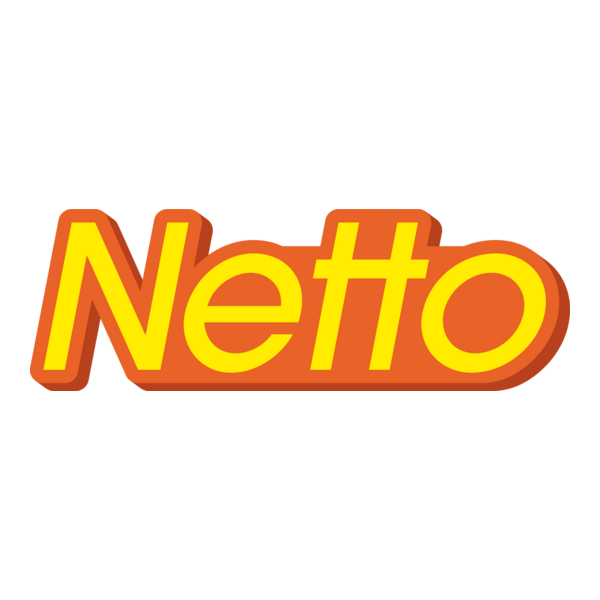
Contexte
Poursuivre ma montée en compétences au sein du monde professionnel tout en finançant ma vie étudiante.
Objectif
Assurer le remplacement d'un salarié durant la période estivale, en intervenant à la fois sur la mise en rayon et la caisse, afin de garantir la disponibilité des stocks dès l'ouverture et une prise en charge fluide des clients.
Missions
Cette mission s'articule autour de deux axes principaux : d'une part, la mise en rayon, qui consiste à réaliser l'implantation et le réassort des produits avant l'ouverture du magasin dans le strict respect des processus de l'enseigne ; d'autre part, la fonction d'hôte de caisse, dédiée à l'accueil des clients et à la fiabilité des opérations d'encaissement de leurs achats.
Bilan
Bilan à venir — Expérience non encore réalisée (planifiée pour août 2026).
Saisonnier E.Leclerc - Mise en Rayon
Août 2024 et Août 2025
Saisonnier E.Leclerc - Mise en Rayon
Août 2024 et Août 2025Contexte
Volonté de mettre un pied dans le monde professionnel pour acquérir de l'expérience et de faire des économies pour mes études.
Objectif
Assurer le remplacement d'un salarié du rayon des liquides afin de garantir la continuité du service et la disponibilité des produits durant la forte affluence estivale.
Missions
Durant cette expérience, j'ai eu plusieurs responsabilités. Tout d'abord, j'étais chargé de la mise en rayon en utilisant un transpalette électrique pour remplir les étagères et offrir un maximum de choix aux clients. Ensuite, avant l'ouverture du magasin, je faisais le facing (avancer les produits) pour que le rayon paraisse toujours plein et agréable aux yeux des clients. De plus, mon travail comprenait aussi l'organisation et le nettoyage de la réserve pour préparer l'arrivée des livraisons. Enfin, quand j'avais de l'avance, j'aidais à la mise en place dans d'autres parties du rayon des liquides.
Bilan
Cette expérience m'a offert un premier aperçu concret du monde professionnel, me permettant de développer mes compétences en organisation, de savoir identifier le bon moment pour solliciter de l'aide, de renforcer mon esprit d'équipe et d'améliorer mon relationnel avec les clients.
Stage d'observation Lubi'Carrelage - Architecture Intérieur et Vente
2021
Stage d'observation Lubi'Carrelage - Architecture Intérieur et Vente
2021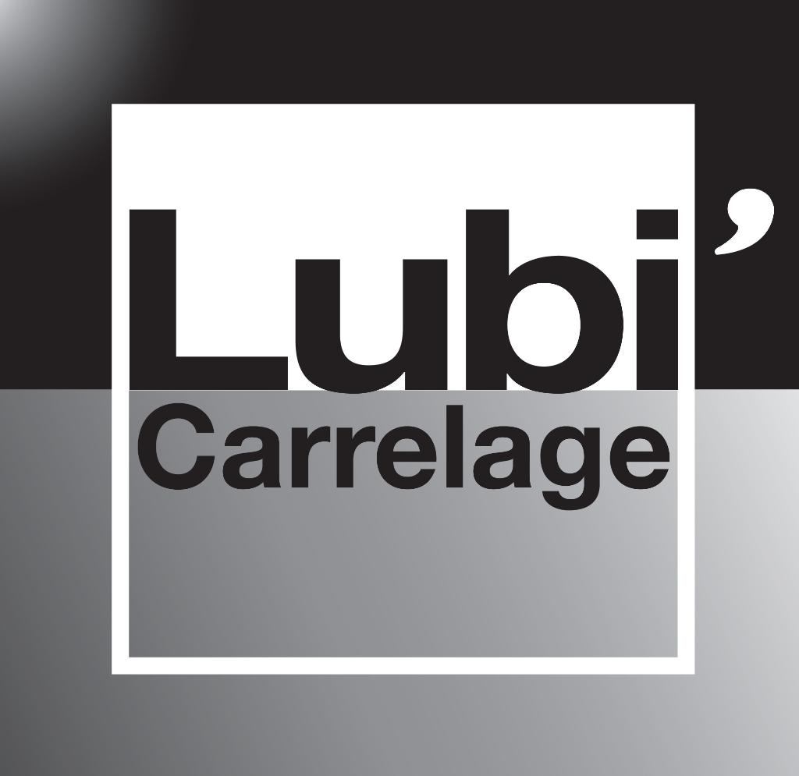
Contexte
Volonté de trouver un stage afin de réaliser la séquence d'observation requise pour l'année de Troisième.
Objectif
Acquérir une première immersion professionnelle pour m'aider à déterminer mon orientation future, découvrir les mécanismes de la relation clientèle et explorer le domaine de l'architecture intérieure.
Missions
Au cours de cette expérience, j'ai eu pour mission principale l'observation active du métier, ce qui impliquait de poser des questions pour bien comprendre le domaine et vérifier si ce secteur m'attirait. De plus, j'ai eu l'occasion d'assister à des réunions permettant d'organiser les jours suivants et de faire un récapitulatif des semaines passées. Enfin, j'ai également pris des notes détaillées sur les techniques de communication et de relation client, et j'ai contribué concrètement en aidant au rangement et à l'organisation des carrelages.
Bilan
Finalement, bien que l'expérience m'ait permis de découvrir concrètement l'environnement de travail, j'ai réalisé que le métier d'architecte d'intérieur n'était pas la voie que je souhaitais suivre.
Projets
Projet Intégratif : Mise en place d'un réseau d'entreprise
2026 - Semestre 2 BUT R&T
Projet Intégratif : Mise en place d'un réseau d'entreprise
2026 - Semestre 2 BUT R&T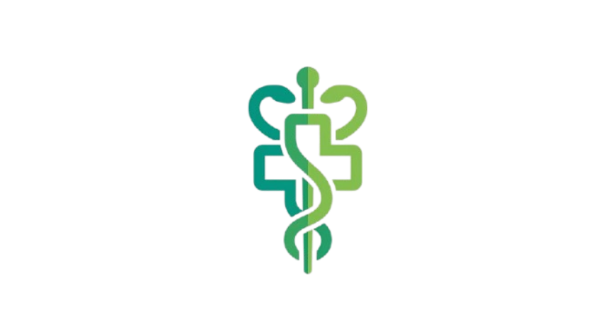
Contexte
Synthèse de cette première année de BUT Réseaux et Télécommunications, ce projet de fin d'études vise à mobiliser l'ensemble des compétences acquises. Il s'articule autour d'une approche transversale combinant les réseaux, la programmation, la téléphonie, la gestion de projet et la communication.
Objectif
L'objectif est de déployer une infrastructure réseau performante pour l'entreprise PharmaSanté, tout en prenant des initiatives d'optimisation lors de sa conception. Il s'agit également de mettre en œuvre des services réseau spécifiques et adaptés aux besoins des pharmaciens ainsi qu'à ceux des clients.
Missions
Pour mener à bien ce projet en cette fin de semestre, la première étape a nécessité une organisation rigoureuse afin de définir la topologie, l'architecture réseau et les équipements requis, dans le strict respect du cahier des charges. L'objectif central est de concevoir et déployer une infrastructure complète pour l'entreprise PharmaSanté, choisie en équipe, en interconnectant des services essentiels tels que l'administration sous Windows Server et Linux, le DHCP, le transfert de fichiers (FTP) et la téléphonie sur IP (IPBX). Enfin, ce projet se clôture par une soutenance orale simulant une présentation professionnelle directement face au client.
Bilan
Bilan à venir — Projet en cours de déploiement.
Mini Projet - PDF Cracker
2026 - Projet Perso
Mini Projet - PDF Cracker
2026 - Projet Perso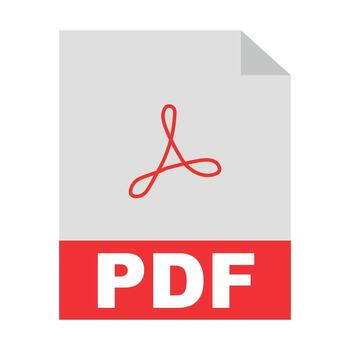
Contexte
Développer un script Python de force brute sur un fichier PDF afin de mesurer et analyser son temps d'exécution.
Objectif
L'objectif est de découvrir de nouvelles bibliothèques Python en autonomie afin de concevoir un outil de récupération de mot de passe pour fichier PDF, permettant ainsi de m'initier au hacking éthique et à l'analyse de la robustesse des mots de passe.
Missions
Le développement de ce script a nécessité la prise en main de quatre bibliothèques
Python spécifiques, adaptées à la logique de mon algorithme.
La bibliothèque pikepdf est le cœur du programme pour la sécurité des
documents. Dans mon code, elle est exploitée dans le bloc try/except avec
la fonction pikepdf.open(). Elle me permet de tester chaque mot de passe
généré et de gérer l'exception pikepdf.PasswordError tant que la clé est
incorrecte.
Pour la logique de force brute, la bibliothèque itertools optimise la
génération des combinaisons. Je l'utilise via
itertools.product(alphabet, repeat=lenght) afin de créer de manière fluide
toutes les variantes de lettres possibles, en augmentant la taille du mot de passe grâce
à la boucle range().
La bibliothèque time est essentielle pour évaluer les performances de
l'attaque. J'utilise time.time() pour marquer le début
(start_time) et la fin de la recherche (end_time), ce qui me
permet de calculer et d'afficher le temps d'exécution précis nécessaire pour découvrir
le mot de passe.
Enfin, la bibliothèque termcolor améliore l'interface en ligne de
commande. Grâce à la fonction colored, je peux structurer visuellement les
informations du terminal, notamment pour afficher la bannière ASCII en jaune, le fichier
cible en magenta, le défilement des tentatives en rouge et le résultat final en vert.
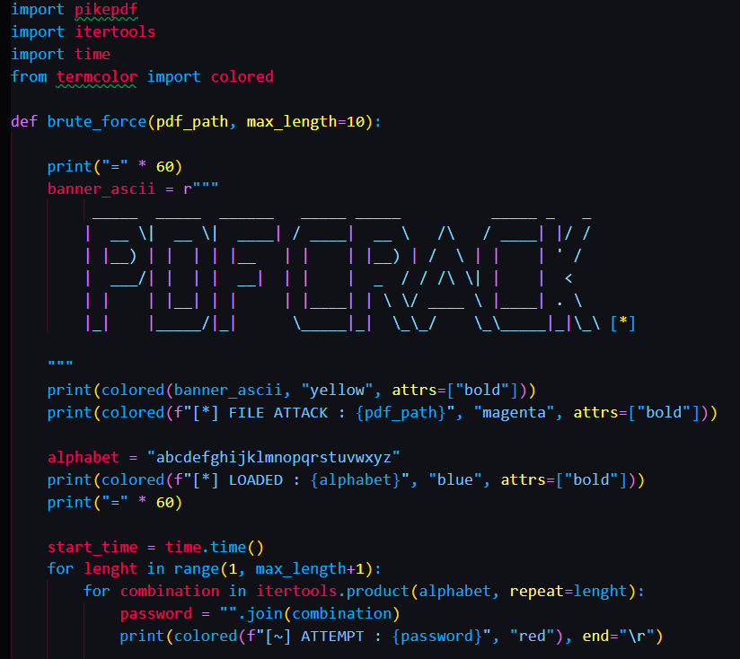
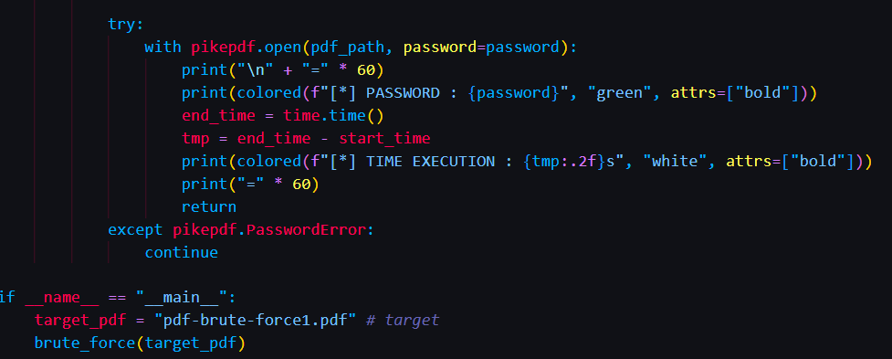
Bilan
Ce projet m'a permis de monter en compétence sur la manipulation de bibliothèques Python spécialisées. Au-delà de l'aspect technique, cette expérience a mis en lumière les limites majeures de l'attaque par force brute. J'ai pu observer concrètement son inefficacité : l'exécution très chronophage et la forte sollicitation des ressources système, se traduisant par une saturation de la mémoire vive (RAM) et une montée en charge significative de la ventilation de mon PC. Cette immersion pratique m'a toutefois offert une première approche réaliste et formatrice du hacking éthique.
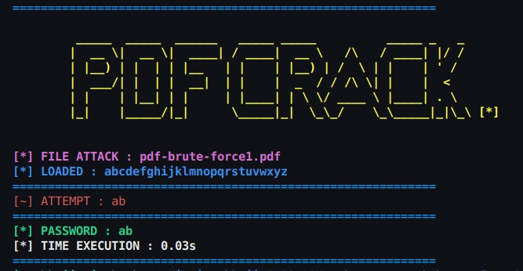
Projet Portfolio (HTML & CSS) : Se présenter sur Internet
2025 - Semestre 1 BUT R&T
Projet Portfolio (HTML & CSS) : Se présenter sur Internet
2025 - Semestre 1 BUT R&T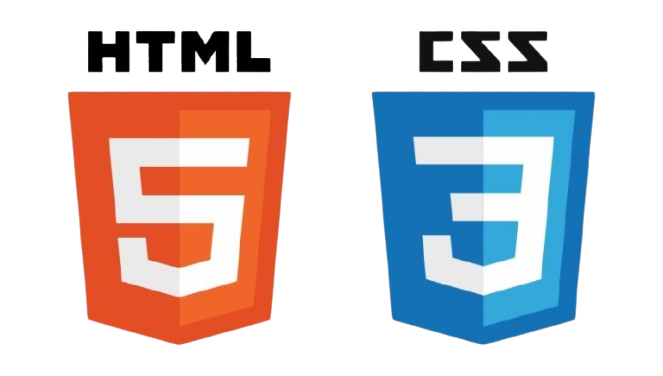
Contexte
Se présenter sur Internet avec un portfolio à développer en HTML et CSS.
Objectif
Ce portfolio a pour vocation d'appuyer notre insertion professionnelle en fournissant un document détaillé de notre parcours, tout en constituant une mise en application concrète des notions HTML et CSS acquises lors de notre première année de BUT en développement Web.
Missions
Le projet a démarré par des séances de TD fournissant une structure de base uniforme pour l'ensemble du groupe. Par la suite, le développement s'est fait en autonomie totale. La principale difficulté résidait dans cette indépendance, bien que les enseignants aient pu être consultés pour des conseils. J'ai principalement mobilisé des ressources externes (W3Schools, MDN Web Docs, Instagram et YouTube) pour surmonter les défis et résoudre les problématiques de codage rencontrées.
Bilan
Ce projet de portfolio m'a permis de mettre en pratique le HTML et le CSS de manière concrète. Si le rendu visuel est satisfaisant, je prévois d'affiner la partie technique au fur et à mesure de l'évolution du site et de l'ajout de nouveaux contenus, afin d'optimiser progressivement la qualité de mon code.
Projet Python : Traiter des données complexes
2025 - Semestre 1 BUT R&T
Projet Python : Traiter des données complexes
2025 - Semestre 1 BUT R&TContexte
Conception et développement d'un outil Python destiné à optimiser l'organisation des étudiants. Le programme permet de récupérer et d'afficher un emploi du temps personnalisé en injectant les données spécifiques à chaque groupe de classe.
Objectif
Cette SAÉ consiste à appréhender et exploiter les bibliothèques NumPy et Pandas en Python pour le traitement de données de grande envergure. L'objectif est d'analyser un fichier CSV volumineux en réalisant des opérations de tri, de filtrage et de manipulation de données structurées.
Missions
Extraction des données : Dans un premier temps, j'extrais les données de l'emploi du temps au format CSV de manière non organisée. L'enjeu majeur consiste à traiter la structure des colonnes et à gérer les point-virgules faisant office de délimiteurs entre les données.
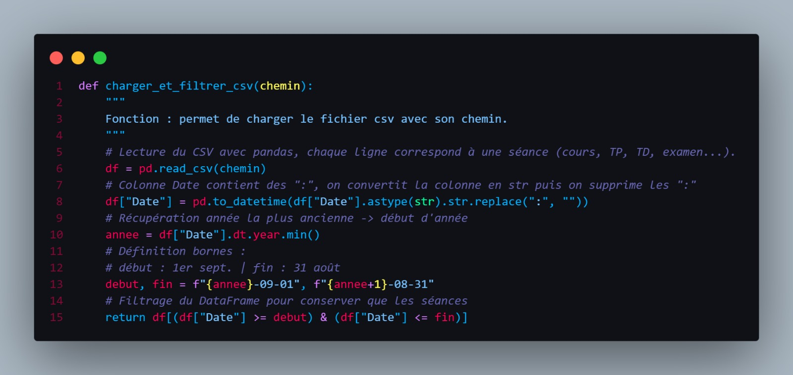
Création du planning : Une fois les données extraites, je procède à un filtrage selon le groupe sélectionné par l'utilisateur. Par exemple, si le groupe "TP3" est choisi, le programme isole uniquement les séances de cours correspondantes et écarte les données non pertinentes.
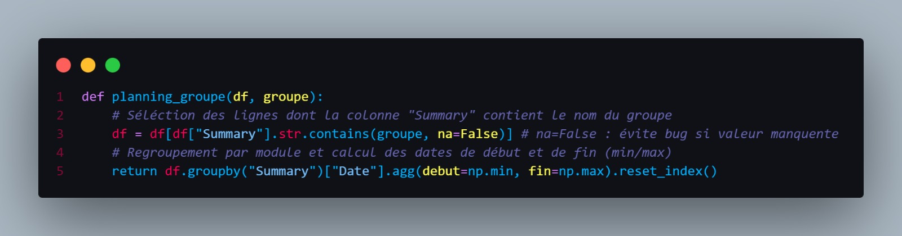
Affichage du planning : Enfin, j'ai implémenté une fonction d'affichage qui itère sur les données sélectionnées pour restituer le planning final pas à pas.
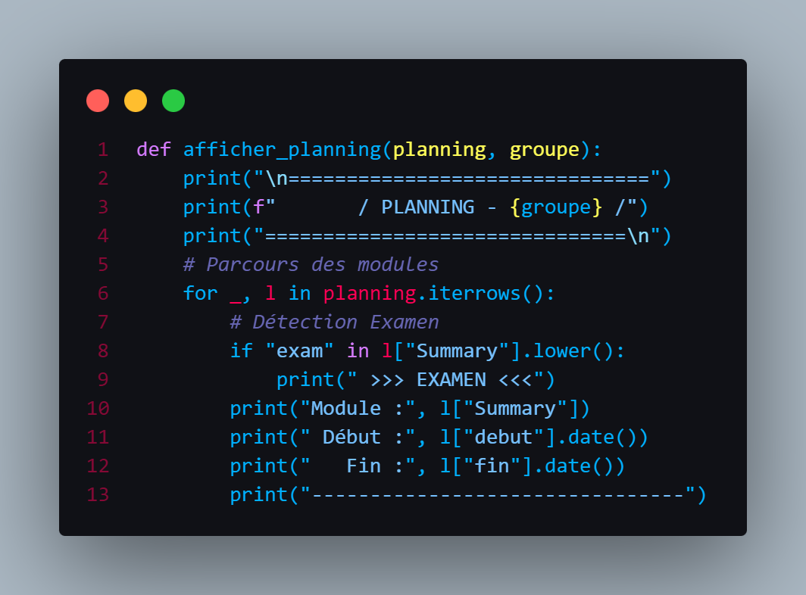
Lancement du programme : Pour finir, j'ai créé une fonction main() permettant de faire appel aux différentes fonctions pour réaliser le projet.
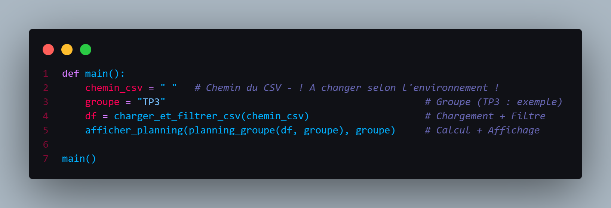
Bilan
La difficulté majeure rencontrée lors de ce projet a été d'apprendre à optimiser mon code, notamment en réduisant, supprimant et compactant certaines instructions. Ce travail a été réalisé en suivant strictement le cahier des charges et le calendrier impartis.
J'en ai retiré trois acquis majeurs : la capacité à prendre en main une bibliothèque Python en autonomie, l'optimisation de code pour plus d'efficacité, ainsi qu'une meilleure méthodologie d'organisation.
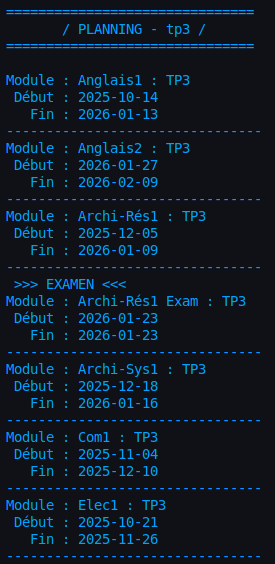
Aperçu du résultat avec le groupe TP3
Divers
Dessin - Ma passion créative
Art
Dessin - Ma passion créative
ArtLe dessin est bien plus qu'un simple passe-temps pour moi : c'est un espace de liberté et de création. Il entretient ma soif d'apprendre, de me perfectionner et de recommencer, tout en développant un sens aigu de la précision.
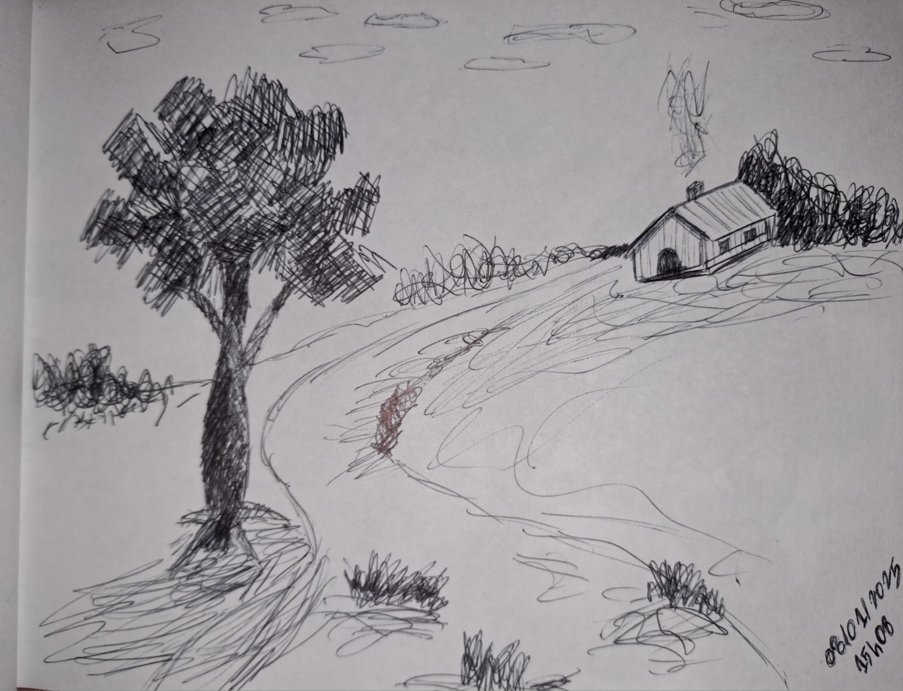
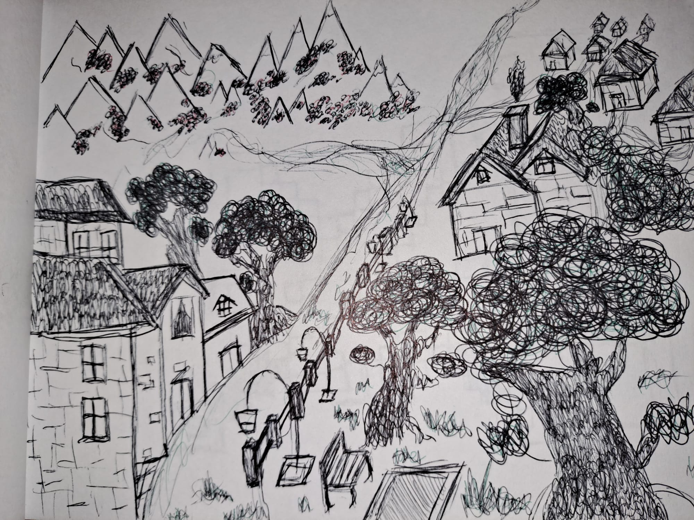
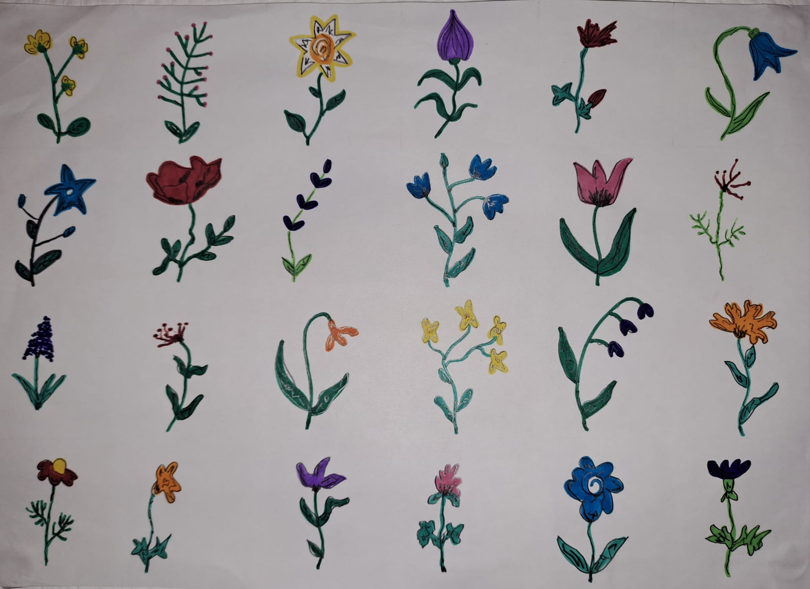
Piano - Ma passion musicale
Musique
Piano - Ma passion musicale
Musique
Pratiquant le piano par passion depuis l'âge de 6 ans, cet instrument
est devenu mon échappatoire pour décompresser et m'exprimer
artistiquement. Cette pratique m'a inculqué une grande rigueur,
nécessaire pour mémoriser les morceaux, ainsi qu'une capacité
d'adaptation essentielle pour interpréter des partitions aux rythmes et
intensités variés.
De par ma grande curiosité, je joue tout ce qui me plaît, qu'il s'agisse de musiques de
jeux vidéo, de films ou de séries.
Mon morceau préféré est La Valse d'Amélie, issue de la bande
originale du film Le Fabuleux Destin d'Amélie Poulain.
La Valse d'Amélie - Arrangement
Solas - Arrangement
Musculation - Mon dépassement personnel
Sport
Musculation - Mon dépassement personnel
Sport
La musculation est bien plus qu'un sport : c'est un moteur de bien-être
quotidien. Elle améliore ma forme physique et renforce durablement ma
confiance en moi.
Cette pratique m'apprend l'organisation, que je m'entraîne seul ou à
plusieurs. Partager ces séances avec des amis est une vraie source de motivation. Nous
nous poussons mutuellement vers le haut dans une ambiance conviviale.
Mon C.V.
Me contacter
Mon profil vous intéresse et vous souhaitez me contacter ?
Vous pouvez me joindre via :